Fundamentals of Linear Control:
A
Concise Approach
Maurício C. de Oliveira
Chapter 6: Controller Design
linearcontrol.info/fundamentals
6.1 Second-Order Systems
Characteristic equation
\[\begin{align} s^2 + 2 \, \zeta \, \omega_n s + \omega_n^2 &= 0, \qquad \omega_n > 0, \end{align}\]
- \(\zeta\): damping ratio
- \(\omega_n\): natural frequency
Roots
\[\begin{align*} s^2 + 2 \, \zeta \, \omega_n s &+ \omega_n^2 = (s - s_1)(s - s_2), & s_1 &= - \omega_n (\zeta + \sqrt{\zeta^2 - 1}), & s_2 &= - \omega_n (\zeta - \sqrt{\zeta^2 - 1}) \end{align*}\]
Real roots
\(|\zeta| \geq 1\)
Complex roots
\(|\zeta| < 1\)
Second-Order Systems
real roots, \(|\zeta| \geq 1\)
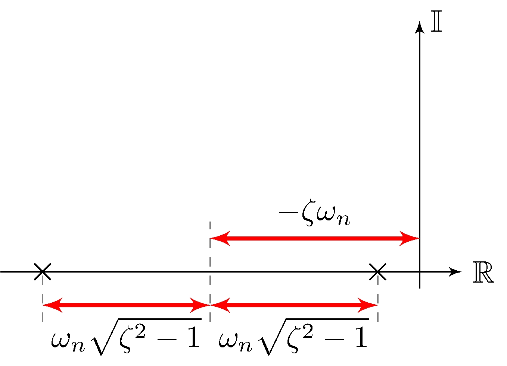
complex roots, \(|\zeta| < 1\)
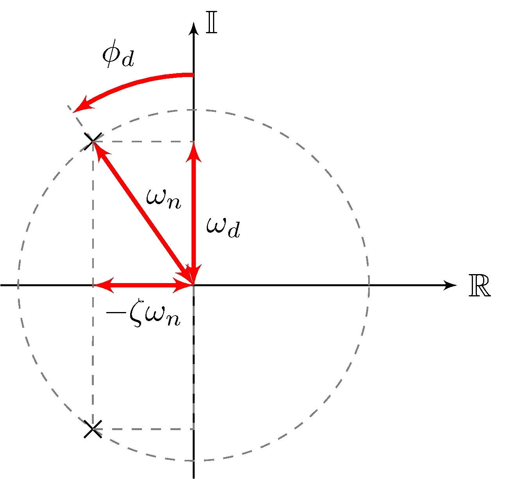
Roots
\[\begin{align} s &= - \omega_n (\zeta \pm \sqrt{\zeta^2 - 1}), & \omega_d &= \omega_n \sqrt{1 - \zeta^2}, & \phi_d &= \sin^{-1} \frac{\zeta \omega_n}{\omega_n} = \tan^{-1} \frac{\zeta \, \omega_n}{\omega_d} = \sin^{-1}\zeta \end{align}\]
Asymptotic stability
\(\zeta > 0\)
Second-Order Systems
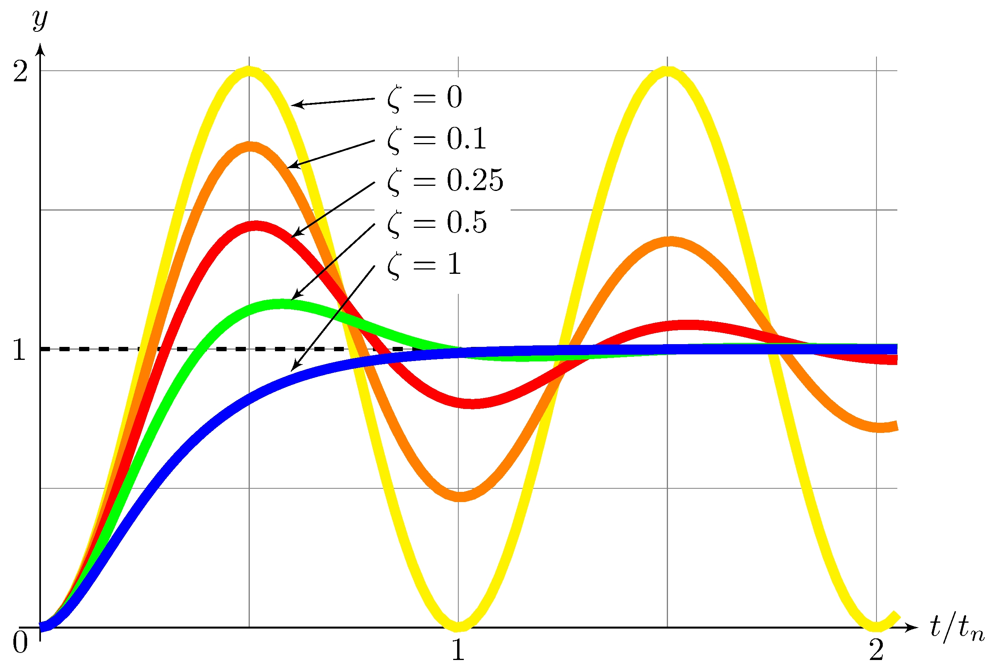
Step response
\[\begin{align*} G(s) &= \frac{\omega_n^2}{s^2 + 2 \zeta \omega_n s + \omega_n^2}, & y(t) = 1 - \frac{1}{\sqrt{1 - \zeta^2}} e^{- \zeta \omega_n t} \sin( \omega_d t + \pi/2 - \phi_d), \quad t \geq 0 \end{align*}\]
Second-Order Systems
Step response
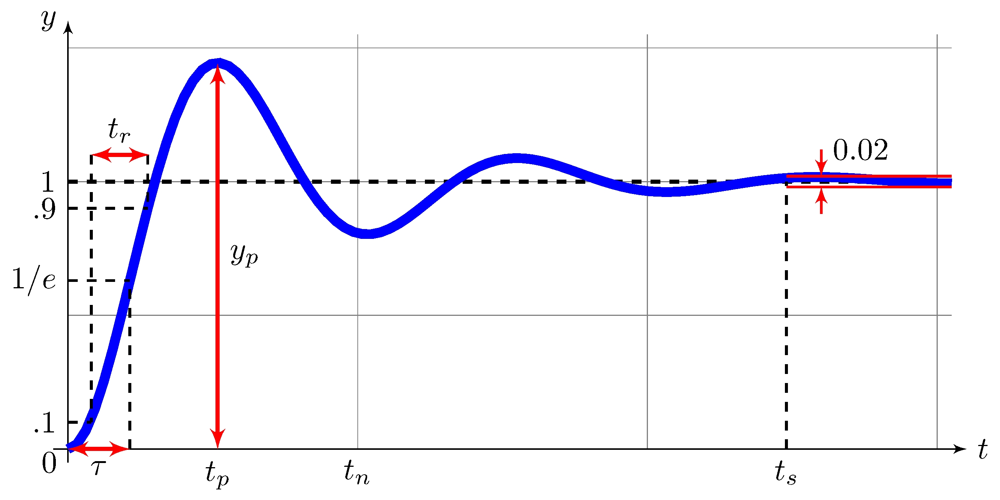
Time-constant and Rise-time
\[\begin{align*} \frac{t_r}{t_n} &\approx 0.16 + 0.14 \, \zeta + 0.24 \, \zeta^3, & \frac{\tau}{t_n} &\approx 0.19 + 0.1 \, \zeta + 0.054 \, \zeta^3, & t_n &= \frac{2 \pi}{\omega_n} \end{align*}\]
Second-Order Systems
Step response
Overshoot and Settling-time
\[\begin{align*} t_p &= \frac{\pi}{\omega_d}, & y_p &= 1 + e^{-\left.{\zeta \pi}\middle/{\sqrt{1-\zeta^2}}\right.}, & t_s &= \frac{\log(50)}{\zeta \, \omega_n} \approx \frac{3.9}{\zeta \, \omega_n} \end{align*}\]
Example: car model with integral feedback
Open-loop
\[\begin{align} G(s) &= \frac{\frac{p}{m}}{s + \frac{b}{m}}, & K(s) &= \frac{K_i}{s} \end{align}\]
Closed-loop
\[\begin{align} H(s) &= \frac{K(s) G(s)}{1 + K(s) G(s)} = \frac{\frac{p}{m} K_i}{s^2 + \frac{b}{m} s + \frac{p}{m} K_i} \end{align}\]
Second-order
\[\begin{align} \omega_n &= \sqrt{\frac{p}{m} K_i}, & \zeta &= \frac{b/m}{2 \sqrt{(p / m) \, K_i}} = \frac{b}{2 \sqrt{p \, m \, K_i}} \end{align}\]
Example: car model with proportional-integral feedback
Open-loop
\[\begin{align} G(s) &= \frac{\frac{p}{m}}{s + \frac{b}{m}}, & K(s) &= K_p + \frac{K_i}{s} \end{align}\]
Closed-loop
\[\begin{align} H(s) &= \frac{K(s) G(s)}{1 + K(s) G(s)} = \frac{\frac{p}{m} (K_p s + K_i)}{s^2 + (\frac{b}{m} + \frac{p}{m} K_p ) s + \frac{p}{m} K_i} \end{align}\]
Second-order
\[\begin{align} \omega_n &= \sqrt{\frac{p}{m} K_i}, & \zeta &= \frac{b/m + p/m K_p}{2 \sqrt{(p / m) \, K_i}} = \frac{b + p K_p}{2 \sqrt{p \, m \, K_i}} \end{align}\]
Example: simple pendulum
Open-loop (stable equilibrium)
\[\begin{align*} G_0(s) &= \frac{1/J_r}{s^2 + (b/J_r) s + m \, g \, r / J_r} \end{align*}\]
Second-order
\[\begin{align*} \omega_{n_\mathrm{ol}} &= \sqrt{\frac{m g r}{J_r}}, & \zeta_{\mathrm{ol}} &= \frac{b}{2\sqrt{J_r m g r}} \end{align*}\]
Open-loop (unstable equilibrium)
\[\begin{align*} G_\pi(s) &= \frac{1/J_r}{s^2 + (b/J_r) s - m \, g \, r / J_r} \end{align*}\]
Example: simple pendulum
Open-loop
\[\begin{align*} G_\pi(s) &= \frac{1}{J_r s^2 + b s - m \, g \, r} \end{align*}\]
Proportional feedback (unstable equilibrium)
\[\begin{align*} H_\pi(s) = \frac{K G_\pi(s)}{1 + K G_\pi(s)} &= \frac{K}{J_r s^2 + b s + K - m \, g \, r}, \\ \omega_{n_\pi} &= \sqrt{\frac{K - m \, g \, r}{J_r}}, \qquad \zeta_\pi = \frac{b}{2 \sqrt{J_r (K - m \, g \, r)}} \end{align*}\]
Closed-loop stability
\(K > m g r\), for example \[\begin{align*} K &= 3 m g r & & \implies & \omega_{n_\pi} &= \sqrt{2} \, \omega_{n_\mathrm{ol}}, & \zeta_\pi &= \frac{1}{\sqrt{2}} \zeta_\mathrm{ol} \end{align*}\]
Example: simple pendulum
Open-loop
\[\begin{align*} G_0(s) &= \frac{1}{J_r s^2 + b s + m \, g \, r}, & \omega_{n_\mathrm{ol}} &= \sqrt{\frac{m g r}{J_r}}, & \zeta_{\mathrm{ol}} &= \frac{b}{2\sqrt{J_r m g r}} \end{align*}\]
Proportional feedback (stable equilibrium)
\[\begin{align*} H_0(s) = \frac{K G_0(s)}{1 + K G_0(s)} &= \frac{K}{J_r s^2 + b s + K + m \, g \, r}, \\ \omega_{n_0} &= \sqrt{\frac{K + m \, g \, r}{J_r}}, \qquad \zeta_0 = \frac{b}{2 \sqrt{J_r (K + m \, g \, r)}} \end{align*}\]
Closed-loop stability
\(K > -m g r\), for example \[\begin{align*} K &= 3 m g r & & \implies & \omega_{n_0} &= 2 \, \omega_{n_\mathrm{ol}}, & \zeta_0 &= \frac{1}{2} \zeta_\mathrm{ol} \end{align*}\]
6.2 Derivative Action
Example: simple pendulum
\[\begin{align} u(t) &= K_p \left ( \bar{\theta}(t) - \theta(t) \right ) - K_d \, \dot{\theta}(t) \end{align}\]
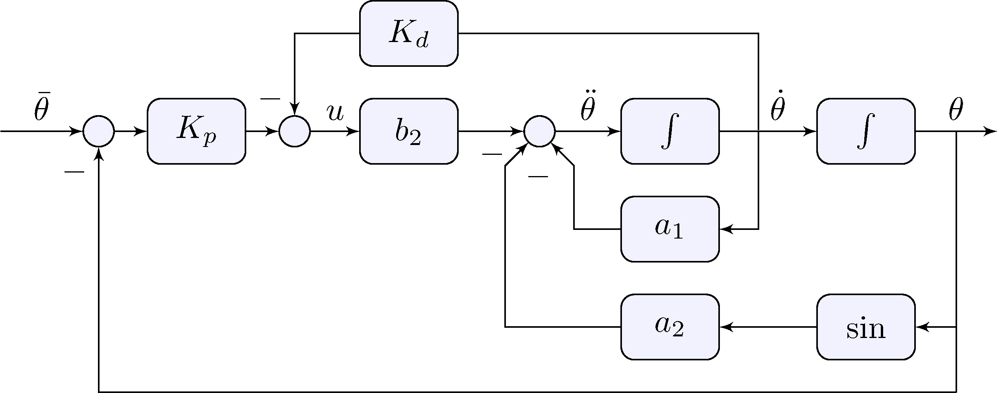
Proportional-derivative feedback
\[\begin{align} u(t) &= K_p \left ( \bar{y}(t) - y(t) \right ) - K_d \, \dot{y}(t) \end{align}\]
Frequency-domain
\[\begin{align} U(s) &= K_p E(s) - K_d \, s Y(s), & E(s) &= \bar{Y}(s) - Y(s) \end{align}\]
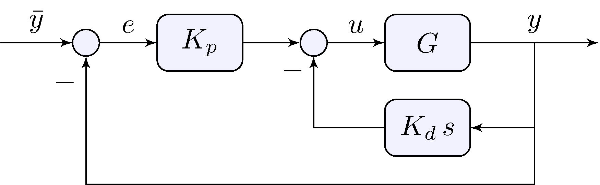
Proportional-derivative feedback
\[\begin{align} u(t) &= K_p \, e(t) + K_d \, \dot{e}(t), & e(t) &= \bar{y}(t) - y(t) \end{align}\]
Frequency-domain
\[\begin{align} U(s) &= ( K_p + s K_d) E(s), & E(s) &= \bar{Y}(s) - Y(s) \end{align}\]
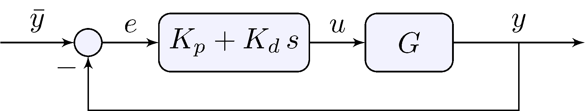
- Same if \(\bar{y}\) is constant!
- If not, extra zero
Example: simple pendulum
Unstable equilibrium
\[\begin{align*} H_\pi(s) = \frac{(K_p + K_d s) G_\pi(s)}{1 + (K_p + s K_d) G_\pi(s)} &= \frac{K_p + K_d s}{J_r s^2 + (K_d + b) s + (K_p - m \, g \, r)}, \\ \omega_{n_\pi} &= \sqrt{\frac{K_p - m \, g \, r}{J_r}}, \qquad \zeta_\pi = \frac{K_d + b}{2 \sqrt{J_r (K_p - m \, g \, r)}} \end{align*}\]
Choose \(K_p\) to set desired natural frequency, e.g. \[\begin{align*} K &= 3 m g r & & \implies & \omega_{n_\pi} &= \sqrt{2} \, \omega_{n_\mathrm{ol}} \end{align*}\]
Choose \(K_d\) to set desired damping ratio, e.g. \(\zeta_\pi = \frac{\sqrt{2}}{2} \approx 0.7\) \[\begin{align*} K_d &= 2 \, \zeta_\pi \sqrt{J_r (K_p - m \, g \, r)} - b = 2 \sqrt{J_r m \, g \, r} - b \end{align*}\]
Similarly around stable equilibrium
6.3 Proportional-Integral-Derivative Control
Proportional-integral-derivative feedback
\[\begin{align} u(t) &= K_p \, e(t) + K_d \, \dot{e}(t) + K_i \int_{0}^{t} e(\tau)\, d \tau, & e(t) &= \bar{y}(t) - y(t) \end{align}\]
Frequency-domain
\[\begin{align} U(s) &= \left ( K_p + K_d \, s + K_i s^{-1} \right ) E(s) = \frac{K_d \, s^2+ K_p \, s + K_i}{s} E(s), & E(s) &= \bar{Y}(s) - Y(s) \end{align}\]
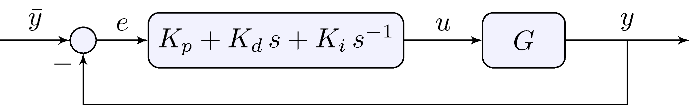
- integral action: asymptotic tracking of constant reference
- derivative action: better “damping”
- Extensive literature on properties of PID control
Proportional-integral-derivative feedback
\[\begin{align} u(t) &= K_p \, e(t) + K_d \, \dot{e}(t) + K_i \int_{0}^{t} e(\tau)\, d \tau, & e(t) &= \bar{y}(t) - y(t) \end{align}\]
Frequency-domain
\[\begin{align} U(s) &= \left ( K_p + K_d \, s + K_i s^{-1} \right ) E(s) = \frac{K_d \, s^2+ K_p \, s + K_i}{s} E(s), & E(s) &= \bar{Y}(s) - Y(s) \end{align}\]
- Transfer-function is not proper: not realizable!
- If \(G\) is second-order then closed-loop transfer-functions are third-order
- Calculation of the characteristic roots is already too complicated
6.4 Root-Locus
The basic idea
- Can we quickly sketch the location of the closed-loop poles without calculating them?
- Root locus \(=\) location of the roots
- Set of simple rules for sketching the root-locus of the feedback system
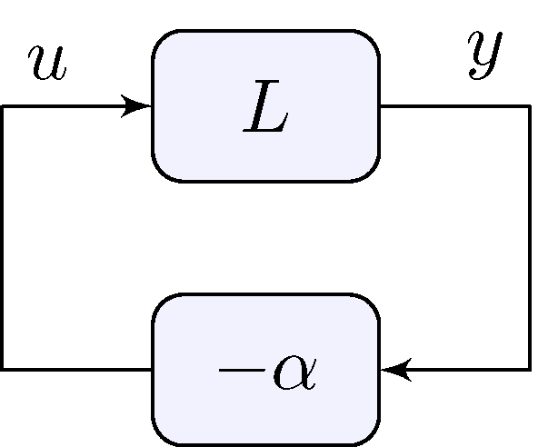
\(\hspace{0.8ex}\) as a function of \(\alpha > 0\)
- Make your feedback system look like it and apply the rules
- \(L\) is the loop transfer-function
Feedback diagram for root-locus
Example
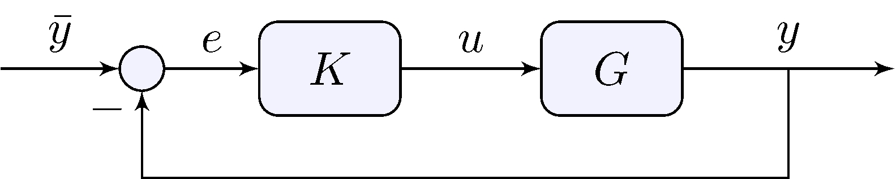
Closed-loop poles
\[\begin{align*} 1 + \alpha L(s) &= 0, & K(s) &= \alpha C(s), & L(s) &= C(s) G(s) \end{align*}\]
Root-locus rules
Key observation
\[\begin{align} \label{eq:rlcrossing} L(s) &= - \frac{1}{\alpha} < 0 & & \implies & \angle L(s) &= \pi \end{align}\]
Rational loop transfer-function
\[\begin{align*} L &= \beta \frac{N_L}{D_L} = \frac{\beta \, (s - z_1)(s - z_2)\cdots(s - z_m)}{(s - p_1)(s - p_2)\cdots(s - p_n)} \end{align*}\] then \[\begin{align*} \angle L = \angle \beta + \angle N_L - \angle D_L = \angle \beta + \sum_{i = 1}^{m} \angle (s - z_i) - \sum_{k = 1}^{n} \angle (s - p_k) \end{align*}\]
Root-locus rules
Phase can be calculated graphically
\[\begin{align*} \angle L(s_0) &= \angle \beta + \sum_{i = 1}^{m} \angle (s_0 - z_i) - \sum_{k = 1}^{n} \angle (s_0 - p_k) \\ &= \angle \beta + \psi_1 - \theta_1 - \theta_2 - \theta_3 \end{align*}\]
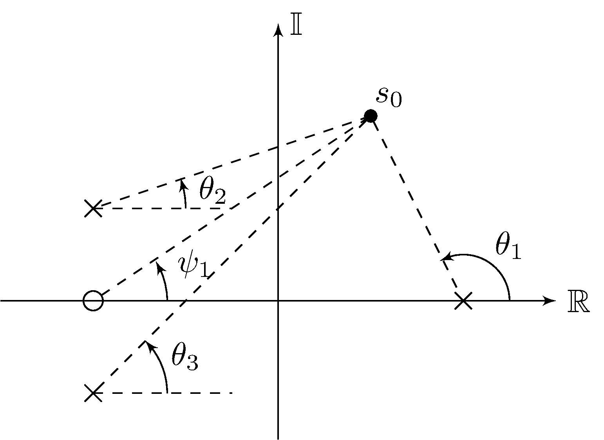
Root-locus rules
Assumption
\(L\) rational and strictly proper with real coefficients
Rules
- Root-locus is a set of \(n\) continuous curves
- The curves:
begin at the poles of \(L\) \[\begin{align*} \lim_{\alpha \rightarrow 0} D_L(s) \left ( 1 + \alpha L(s) \right ) &= \lim_{\alpha \rightarrow 0} D_L(s) + \alpha \beta N_L(s) = D_L(s) \end{align*}\]
end at the zeros of \(L\) \[\begin{align*} \lim_{\alpha \rightarrow \infty} \alpha^{-1} D_L(s) \left ( 1 + \alpha L(s) \right ) &= \lim_{\alpha \rightarrow \infty} \alpha^{-1} D_L(s) + \beta N_L(s) = \beta N_L(s) \end{align*}\]
- \(n - m \geq 1\) curves go to infinity
Root-locus rules
Assumption
\(L\) rational and strictly proper with real coefficients and \(\beta > 0\)
Rule
- \(s \in \mathbb{R}\) is in the root-locus iff \(L\) has an odd number of poles and zeros with real part greater than or equal to \(s\)
Example (complex locus not shown)
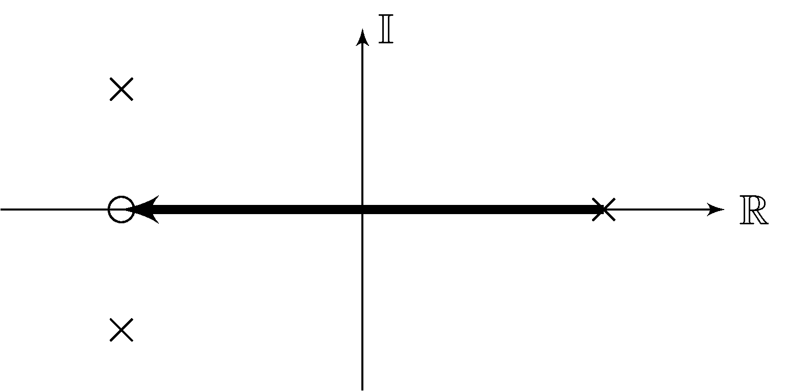
- What would the \(\beta < 0\) version be?
Root-locus rules
Assumption
\(L\) rational and strictly proper with real coefficients and \(\beta > 0\)
Rule
- \(s \in \mathbb{R}\) is in the root-locus iff \(L\) has an odd number of poles and zeros with real part greater than or equal to \(s\)
Example: car model under proportional feedback
\[\begin{align*} \alpha &= K_p, & L(s) &= \frac{\frac{p}{m}}{s + \frac{b}{m}} = \frac{3.7}{s + 0.05} \end{align*}\]
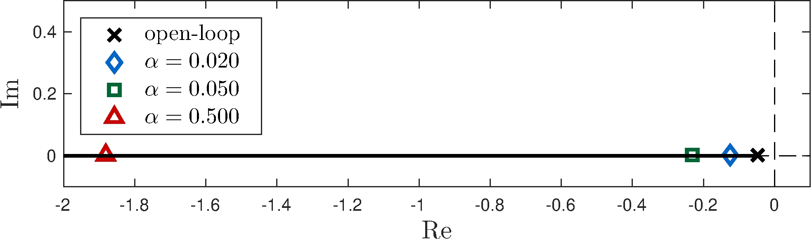
Root-locus rules
Assumption
\(L\) rational and strictly proper with real coefficients
Rule
- If \(n > m + 1\), then \(n - m\) roots converge to \(n - m\) straight-line asymptotes intersecting at: \[\begin{align*} c &= \frac{\sum_{k=1}^{n} p_k - \sum_{i=1}^{m} z_i}{n - m} \in \mathbb{R} \end{align*}\]
- If \(\beta > 0\), the asymptotes intersect the real axis at angles \[\begin{align*} \phi_k &= \frac{\pi + k \, 2 \pi}{n - m}, \quad k = 0, \cdots, n-m-1 \end{align*}\]
Root-locus rules
Example: car model under integral feedback
\[\begin{align*} \alpha &= K_i, & L(s) &= G(s) \, C(s) = \frac{3.7}{s (s + 0.05)} \end{align*}\]
Asymptotes
\[\begin{align*} c &= \frac{-0.05 + 0}{2} = -0.025, & \phi_1 &= \frac{\pi}{2}, & \phi_2 &= \frac{3\pi}{2} \end{align*}\]
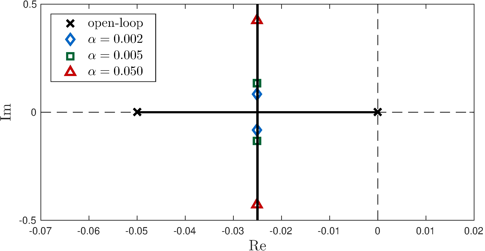
Root-locus rules
Example: model with three poles and one zero
\[\begin{align*} p_1 &= a, & p_2 &= - a + j b, & p_2 &= - a - j b, & z_1 &= - a \end{align*}\]
2 asymptotes
\[\begin{align*} c &= \frac{(-a - j b) + (-a + j b) + (a) - (-a)}{3 - 1} = 0, & \phi_1 &= \frac{\pi}{2}, & \phi_2 &= \frac{3\pi}{2} \end{align*}\]
Possible root-loci
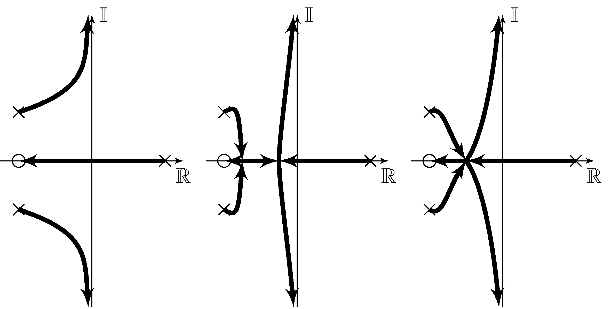
Root-locus rules
Example: car model under proportional-integral feedback
\[\begin{align*} G &= \frac{\frac{p}{m}}{s + \frac{b}{m}} = \frac{3.7}{s + 0.05}, & K(s) &= K_p + \frac{K_i}{s} = K_p \frac{s + K_i/K_p}{s} \end{align*}\]
Loop transfer-function
\[\begin{align*} \alpha &= K_p, & L &= G \, C = \frac{3.7 \left (s + {K_i}/{K_p} \right )}{s \, (s + 0.05)} \end{align*}\]
Choice of controller zero
\[\begin{align*} \frac{K_i}{K_p}= \gamma \frac{b}{m} = \gamma \, 0.05 \end{align*}\]
- \(\gamma = 1\) is a pole-zero cancellation
Root-locus rules
Example: car model under proportional-integral feedback
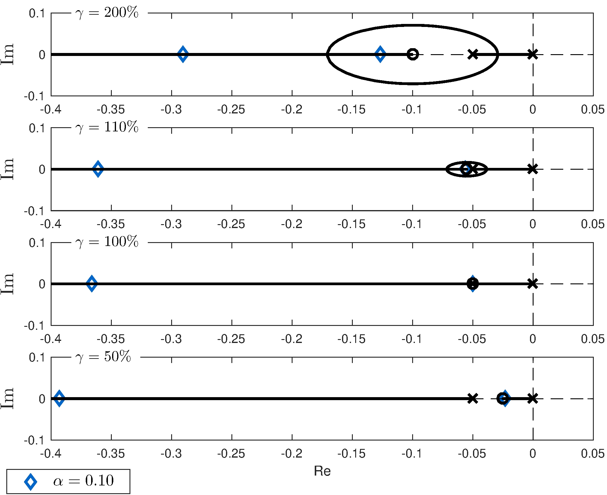
6.5 Control of the Simple Pendulum - Part I

Proportional-derivative feedback
Controller
\[\begin{align*} C_\mathrm{PD}(s) &= K_d \left (s + z \right), & z &= \frac{K_p}{K_d} \end{align*}\]
Data
\[\begin{align} m &= 0.5 \text{kg}, & \ell &= 0.3 \text{m}, & r &= \ell/2 = 0.15 \text{m} \\ b &= 0 \text{kg/s}, & g &= 9.8 \text{m/s}^2, & % J &= \frac{m \ell^2}{3} = 0.015 \text{kg m}^2. J &= \frac{m \ell^2}{12} = 3.75 \times 10^{-3} \text{kg m}^2, & J_r &= J + m r^2 = 0.015 \end{align}\]
Gains
\[\begin{align*} K_d &=3 \, m \, g \, r \approx 0.21, & K_p &=2 \sqrt{J_r m \, g \, r} - b \approx 2.21, & z &\approx 10.5, & C_\mathrm{PD}(s) &\approx 0.21 (s + 10.5) \end{align*}\]
Proportional-derivative feedback
System model
\[\begin{align*} G_\pi(s) &= \frac{66.7}{(s + 7)(s - 7)} \end{align*}\]
Controller
\[\begin{align*} K(s) &= C_\mathrm{PD}(s) = K_d (s + z), & z &= \frac{K_p}{K_d} > 0 \end{align*}\]
Root-locus
\[\begin{align*} \alpha &= K_d, & L &= \frac{1}{K_d} G_\pi \, C_\mathrm{PD} = \frac{66.7 (s + z)}{(s + 7)(s - 7)} \end{align*}\]
\(\qquad z = 10.5\) 
- Diamonds: \(K_d \approx 0.21 \quad \implies \quad \omega_{n_\pi} = \sqrt{2} \, \omega_{n_\mathrm{ol}} \approx 9.90, \quad \zeta_\pi = {1}/{\sqrt{2}} \approx 0.71\)
- PD controller is not proper, hence not realizable: we need a pole
- How about a pole at the origin for some desirable integral action?
Proportional-integral feedback
Controller
\[\begin{align*} K &= K_p \frac{(s + z)}{s} \end{align*}\]
Root-locus
\[\begin{align*} \alpha &= K_p, & L &= \frac{66.7 (s + z)}{s (s + 7)(s - 7)} \end{align*}\]
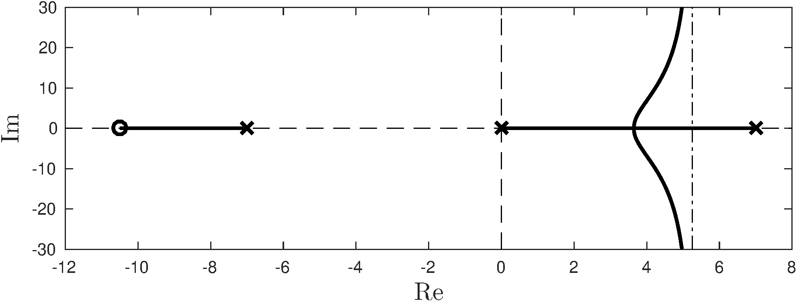
- No \(K_p > 0\) can make closed-loop stable!
Proportional-derivative feedback plus pole
Controller
\[\begin{align*} K(s) = K \frac{s + z}{s + p} \end{align*}\]
Root-locus
\[\begin{align*} \alpha &= K & L &= \frac{66.7 (s + z)}{(s + 7)(s - 7)(s + p)} \end{align*}\]
2 asymptotes
\[\begin{align*} c &= \frac{7 - 7 + (-p) - (-z)}{n - m} = \frac{z - p}{2}, & \phi_1 &= \frac{\pi}{2}, & \phi_2 &= \frac{3\pi}{2} \end{align*}\]
Stability
Possible with large \(K\) only if \[\begin{align*} c &< 0 & & \implies & p &> z \end{align*}\]
Proportional-derivative feedback plus pole
Root-locus
\[\begin{align*} \alpha &= K & L &= \frac{66.7 (s + z)}{(s + 7)(s - 7)(s + p)} \end{align*}\]
Choice of pole
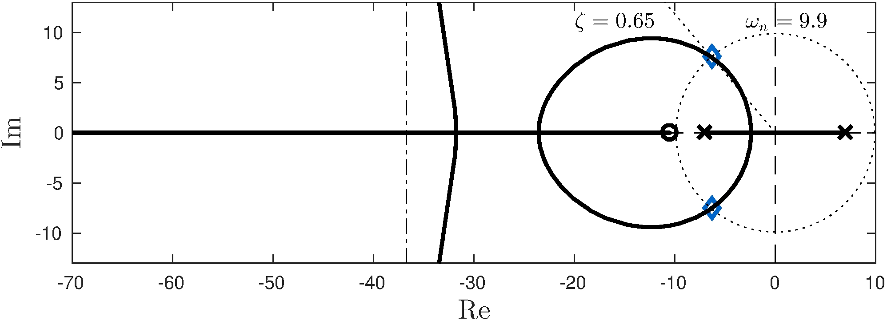
\(p = 8 z \gg z \approx 10.5\)
Root-locus near origin is mostly unaffected
Proportional-derivative feedback plus pole
Root-locus
\[\begin{align*} \alpha &= K & L &= \frac{66.7 (s + z)}{(s + 7)(s - 7)(s + p)} \end{align*}\]
Choice of pole
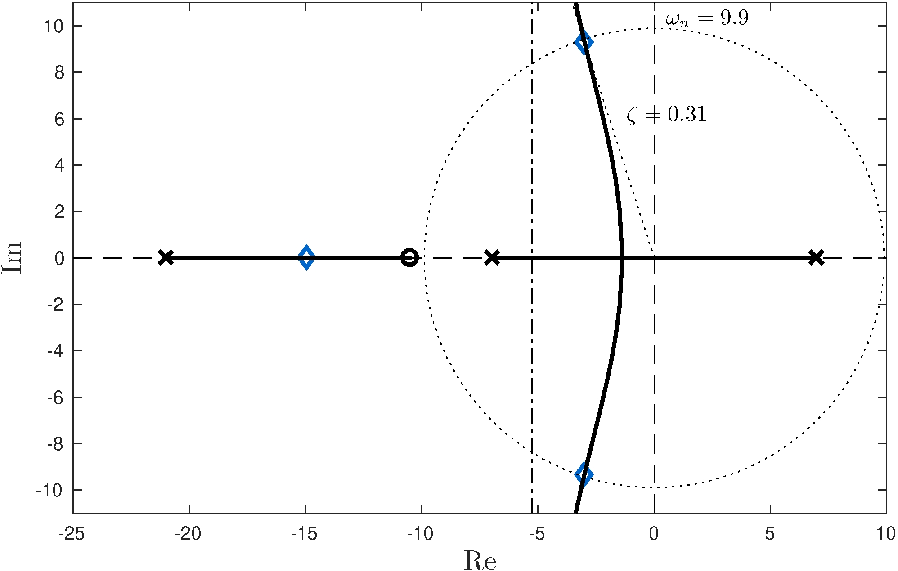
- \(p = 2 z > z \approx 10.5\)
- Asymptote interferes with root-locus near the origin
- Low damping
Proportional-derivative feedback plus pole
Root-locus
\[\begin{align*} \alpha &= K & L &= \frac{66.7 (s + z)}{(s + 7)(s - 7)(s + p)} \end{align*}\]
Choice of pole and adjustment of zero
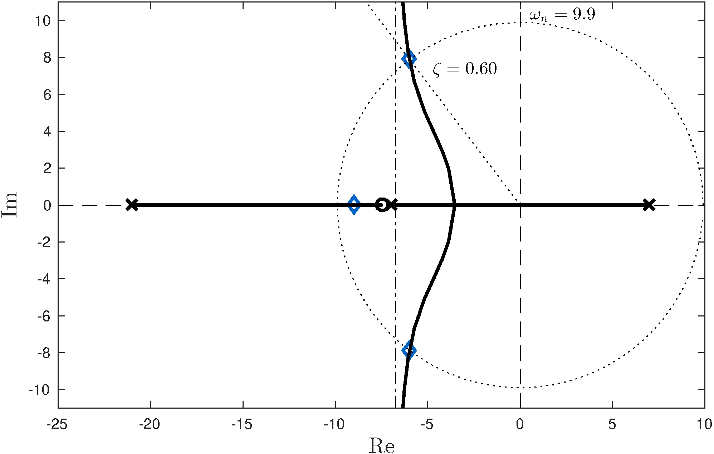
- \(p = 2 z > \tilde{z} \approx 7.5\)
- Adjusting zero improves damping
- Final controller \[\begin{align*} C_\mathrm{lead}(s) \approx 3.83 \frac{s + 7.5}{s + 21} \end{align*}\]
Can we add integral action?
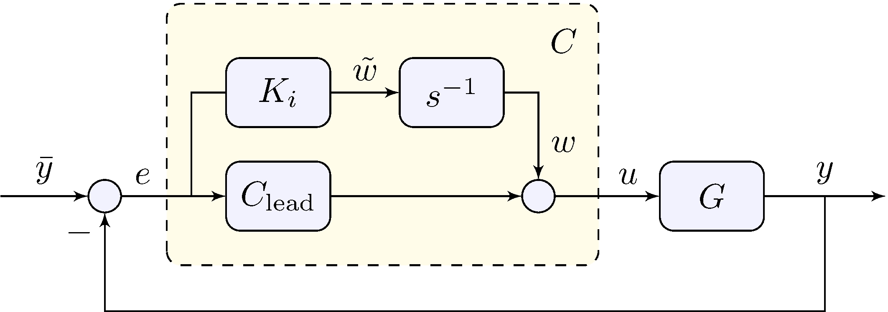
- Previous attempt failed to stabilize
- Additive approach means that stability is guaranteed for \(K_i\) small
- Structure of controller \[\begin{align} C(s) = \frac{K_i}{s} + C_\mathrm{lead}(s) &= K \frac{s^2 + (z + {K_i}/{K}) s + p {K_i}/{K}}{s \, (s + p)} \end{align}\]
- What is \(L\)?
Can we add integral action?
Root-locus analysis
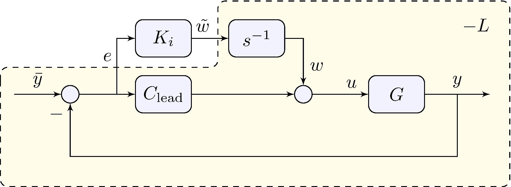
Loop transfer-function
\[\begin{align*} \alpha &= K_i, & L = - \frac{E}{\tilde{W}} = - s^{-1} \frac{E}{W} = s^{-1} D = \frac{s^{-1} G_\pi}{1 + G_\pi \, C_\mathrm{lead}} \end{align*}\]
Can we add integral action?
Root-locus analysis
\[\begin{align*} \alpha &= K_i, & L = - \frac{E}{\tilde{W}} = - s^{-1} \frac{E}{W} = s^{-1} D = \frac{s^{-1} G_\pi}{1 + G_\pi \, C_\mathrm{lead}} \end{align*}\]
Choice of integral gain
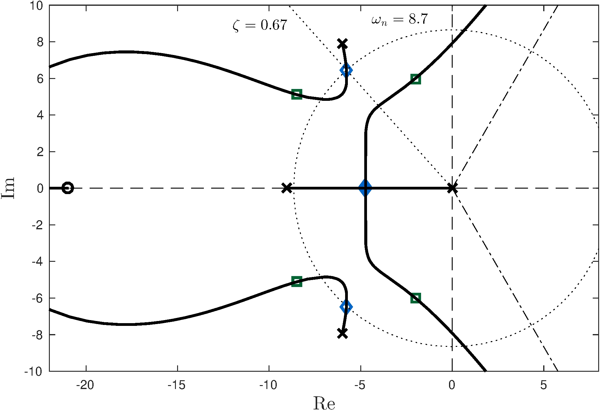
- Diamonds: double real poles, \(\omega_n \approx 8.7\)
- Squares: \(\omega_n \approx 9.9\), underdamped poles
- Final controller: \[\begin{align*} C_\mathrm{6}(s) \approx 3.83 \frac{(s+6.86)(s+0.96)}{s \, (s+21)} \end{align*}\]
- See book for:
- controller design around the stable equilibrium
- direct root-locus design with integrator